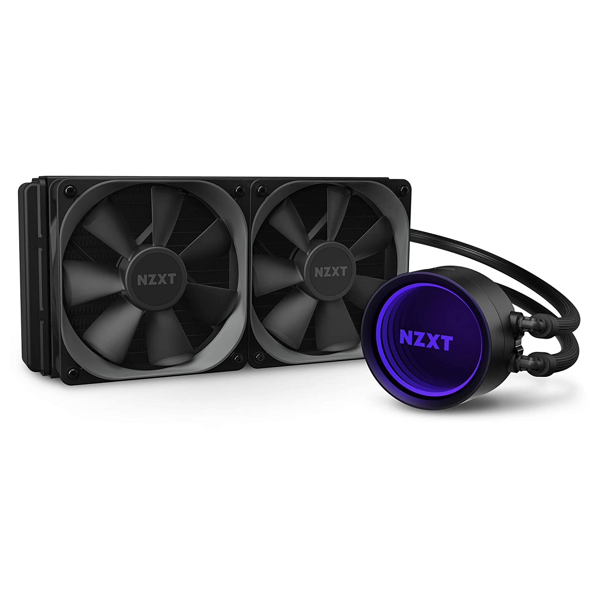
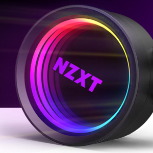
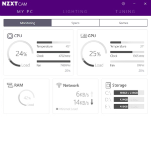
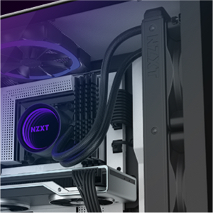

NZXT - Kit de refrigeración líquida para CPU Kraken X53 RL-KRX53-01 AIO RGB, de 240 mm, diseño de espejo infinito giratorio, con bomba mejorada, alimentado por CAM V4, conector RGB

Costo total estimadas: COP 539,227.44 incluyendo depósito de tarifas de importación en Colombia
Envío GRATIS a Colombia aplica para este artículo.
Sobre este articulo
-
Diseño: con una tapa rediseñada y un anillo de espejo infinity LED más grande, la nueva Kraken X permite ajustar la orientación del cabezal de la bomba para adaptarse sin afectar la dirección del logotipo.
-
Más grande y más brillante: la tapa de espejo infinito 10% más grande permite un RGB más vívido y una tapa giratoria se adapta a la reorientación del logotipo sin importar la dirección en la que se instale el refrigerador.
-
Mejor control: la integración Full CAM le permite administrar el rendimiento de su Kraken con precisión
-
Rendimiento increíble: los ventiladores de radiador Aer P cuentan con una entrada biselada y un rodamiento dinámico de fluido que proporciona operaciones silenciosas, durabilidad y un potente rendimiento de refrigeración.
-
Fácil instalación: las mangas de malla de nailon fino fortalecen el tubo de goma, proporcionando durabilidad y protección contra mal manejo.
-
Enchufe y CPU compatibles: Intel Socket LGA 1151, 1150, 1155, 1156, 1366, 2011, 2011-3, 2066/AMD Socket AM4, TR4 (soporte no incluido).

Más grande y brillante.
Un anillo LED 10 % más grande permite un RGB más vivo. Una parte superior giratoria acomoda reorientar el logotipo sin importar la dirección en la que se instala el refrigerador.

MEJOR CONTROL
CAM proporciona controles sofisticados con una interfaz intuitiva y fácil de usar. Ahora, con una mejor sincronización para la iluminación en todos los dispositivos RGB NZXT, la integración CAM completa le permite gestionar el rendimiento de su Kraken con precisión, haciendo ajustes con solo pulsar un botón.

Rendimiento increíble
El canal RGB se integra fácilmente con cualquier accesorio RGB, incluidos los ventiladores AER RGB 2.